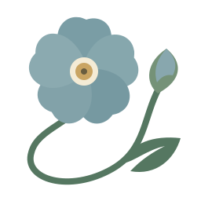

小处，保持清晰。
手机顶部继续使用简洁矢量标记。细脉留给更大的展示空间。

REMEMBER ME沿着真实勿忘我的五瓣花形，添一点弯曲、细脉与柔光。拖动下面的参数，看光如何轻轻落在花瓣上。
手机顶部继续使用简洁矢量标记。细脉留给更大的展示空间。
轮廓由五个圆瓣的径向交点 R(δ) = d·cosδ + √(b² − d²·sin²δ) 加细小缺口与不对称项决定；高度函数控制边缘弯曲，有限差分计算法线，再叠加柔和光照与放射状细脉。枝叶由贝塞尔曲线绘制。
这是原创 WebGL 高度场 + SVG 植物插画，属于 2.5D 艺术近似；不是实拍，也不是可自由旋转的完整三维模型。仅在参数和尺寸改变时绘制；不支持 WebGL 时显示已有矢量标记。
技术参考：glflower（曲面、法线）；BloomingRoseField（参数化卷曲）。本实现未复制其代码、网格或纹理。